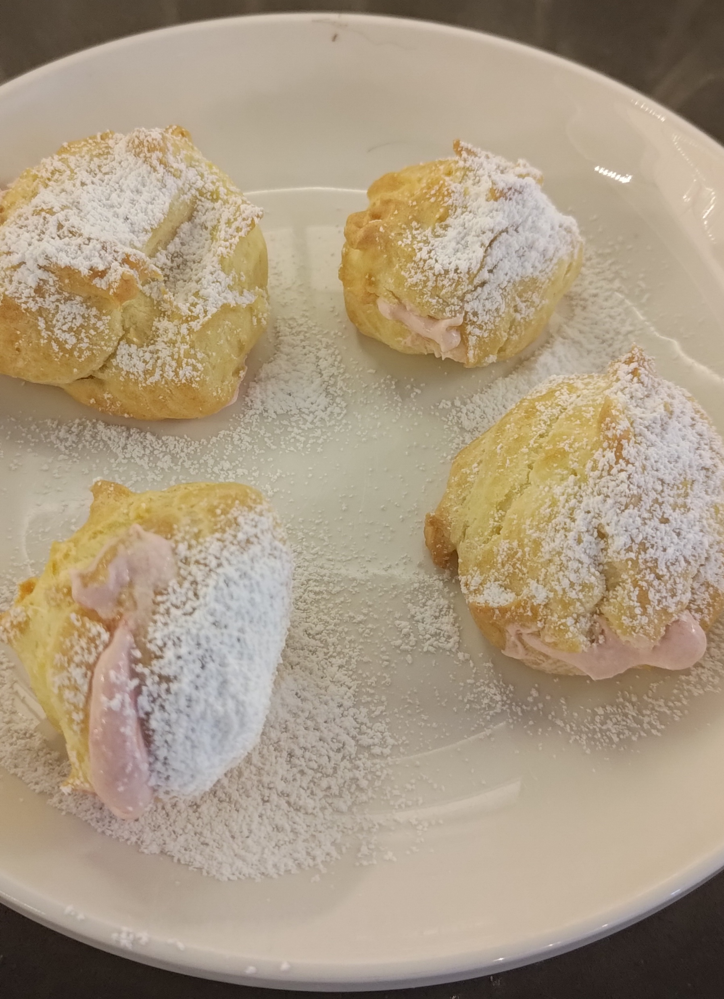

Cream Puffs - with Strawberry and Rhubarb
I grew up in the Pacific Northwest, and one of my favorite seasonal food memories is the juxtaposition of sweet strawberries and tart rhubarb.
I wanted a light hit of sweet and sour without all the sugar and weight of a slice of pie. These are relatively low sugar, to help the rhubarb come through. You can always add more sugar, or dust the final puffs with powdered sugar if you'd like them sweet.
Ingredients
This recipe is really 3 in one, you can swap out the fruit for just about anything, although you need to manage the moisture levels- it can't be too dry or too wet.
The cream puff recipe should not be altered- they are fragile and easily fall/burn/undercook.
Fruit compote
- 2 C Chopped Rhubarb (can be previously frozen)
- 2 C chopped strawberries (can be previously frozen)
- 2.5 T sugar
- 1 t Agar Agar
- 2 T water
Filling
- 400 mL heavy Cream (1 pint)
- 1/4 C powdered sugar
- 2/3 C fruit compote (from above, or substitute your own)
Cream puffs
- 4 eggs
- 1/2 C Butter
- 1 T sugar
- 1 C water
- 2/3 C flour
- 1/3 C Corn starch
Steps
Fruit
Start with the fruit compote- which can be made well in advance, and even stored in the freezer. Put the water and rhubarb into a sauce pan and simmer for 10 minutes, or until the rhubarb starts to get mushy.
Add chopped up strawberries, sugar and cooked down rhubarb to a food processor. Blend until very smooth, then with the processor still running, add the agar agar, slowly to avoid clumps.
Check the taste and consistency: make sure the sugar level is to your liking- I like to taste the rhubarb, which usually means on the tart side. For consistency, it should like a little bit "set" with no liquid dripping when you pick up a spoonful and drop it (this is the agar agar).
Cool, and store in the fridge until you're ready to assemble.
Cream puffs
Start by pre-heating the oven to 400F.
To make the cream puffs, begin by bringing the water to a boil in saucepan. Once it's boiling, add the butter, remove from the heat and stir to melt the butter. Return to the heat, and return to a boil. Immediately add the sugar, cornstarch and flour. Stir vigorously until a dough forms. Add the eggs, and stir some more. It will look too loose, don't stop stirring! Once a ball forms, remove from the heat, and using a 1/2T measure spoon, make a mounded scoop. Drop these onto a parchment covered sheet about 2 inches apart, using a finger to scoop out all of the sticky batter.
Place in the oven and immediately lower the temp to 325F. Set a timer for 35minutes. They should come out mostly spherical and lightly brown.
Fruit Whipped Cream
While the puffs cool, put the heavy cream and sugar into a stand mixer.
Beat on high until the texture is thick and holds a peak.
Add 2/3 C of the fruit compote and gently fold until it's incorporated. Return to the fridge to cool for ~10 minutes before assembling.
Final assembly
I use a small pairing knife to cut an X shaped hole in the top or side of each puff. Using a pastry bag with a small tip, fill each puff until the whipped cream oozes out of the incision.
Optionally, you can sprinkle powdered sugar over the top to sweeten them. They can be stored in the fridge for up to 24 hours, but it's recommended to eat them right away.
